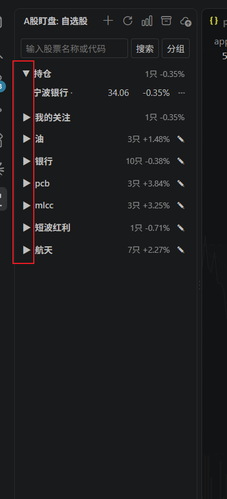
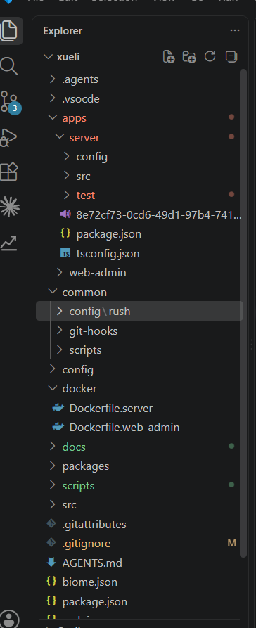

01
不用切屏
行情进入 VS Code 侧边栏与编辑器背景，编码上下文始终完整。
把 A 股实时行情、分时走势和持仓盈亏，安静地放进你的开发工作台。无需来回切屏，也不打断正在发生的思考。
interface Signal {
symbol: string;
score: number;
}
export const watch = (
market: 'CN-A'
) => stream(market)
.filter(isOpportunity)
.map(toSignal);不再把注意力交给另一个窗口。重要信息就在熟悉的位置，用最少的视觉噪音，提供足够的市场感知。
行情进入 VS Code 侧边栏与编辑器背景，编码上下文始终完整。
一键隐藏、独立透明度控制。你决定行情何时出现、出现多少。
本地 JSON 无损迁移，GitHub 私有仓库手动同步，配置始终属于你。
零轴、价格区间、均价线、分时成交额，全部以克制透明度融入编辑器。
三大指数固定置顶，分组、折叠、关注、拖拽排序，全是熟悉的 Explorer 语言。
记录买入、部分卖出和完整清仓，累计已实现盈亏与收益率随手可查。
价格、涨跌幅、量比、换手率与快速涨跌分级提醒；越线触发并自动冷却。
这是一段页面内的行情动效演示。插件在交易时段获取公开行情数据，并对异常自动降级。

树状分组像 Explorer 一样自然
背景分时亮度随时调节
持仓置顶盈亏一眼可见

从缩进引导线、折叠箭头到紧凑行距，股票池遵循 Explorer 的操作直觉。光标滑过去，你甚至不会觉得自己离开了项目目录。
通过 VS Code 的 GitHub 登录创建私有同步仓库。Token 不落盘，上传前检测云端变更，避免另一台电脑的配置被静默覆盖。
本地优先离线也能完整使用
冲突保护更新不会静默覆盖
可恢复每次导入前自动备份
快捷键只控制行情背景，不影响代码、不关闭面板。下一次唤醒，透明度自动回到舒适默认值。